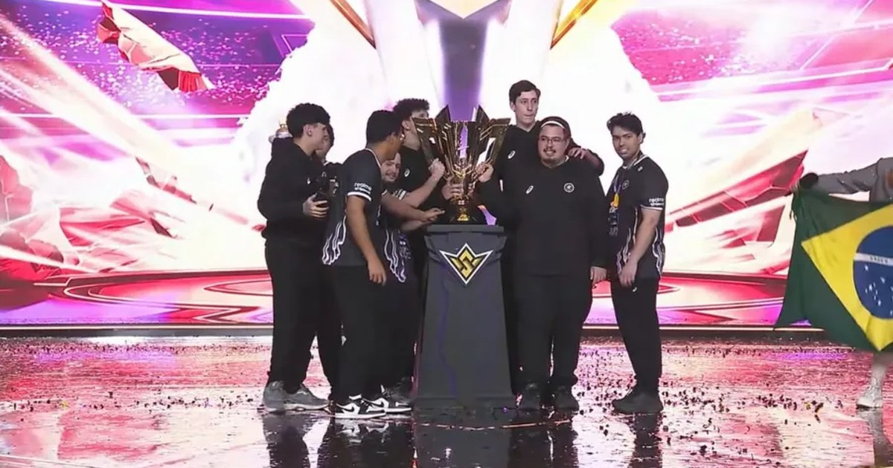

Fluxo W7M are world champions again — Brazil's fourth Free Fire title, won the hard way in Bangkok
Three other teams reached Champion Rush first. Fluxo W7M reached it last — and finished it. The Brazilians closed out the Free Fire World Series Global Final 2026 at BITEC LIVE on Saturday for their second world title, a year after losing this exact final to Buriram United.

Disclosure: this post contains affiliate links. I earn a commission on qualifying purchases.
Fluxo W7M are the Free Fire World Series 2026 world champions. The Brazilian squad — Bops, BuTziN, MT7, Giuh and Proxx7 — won the Grand Final at BITEC LIVE in Bangkok on Saturday, surviving a Champion Rush finish in which they were the last of four teams to become eligible to win it, and the only one that did.
The title is Fluxo's second world championship and Brazil's fourth. It also settles a score: a year ago in Jakarta, Fluxo lost this final to Thailand's Buriram United. This time, on Buriram's home stage, the Brazilians took the trophy back.
The final nobody could close
All twelve teams started the Grand Final level, and the early running belonged to someone else. Blue Cheese took the opening game on Nexterra, and Team Flash set the early pace before Fluxo's first Booyah arrived in Game 3 on Purgatory, with nine eliminations. A second Fluxo win followed in Game 5, closed out in the last fight of the map against fellow Brazilians LOUD.
Then the format turned the screw. Under Champion Rush, a team that passes 110 points wins the title with its next Booyah — and by the end of match seven, Flash, P Esports and LOUD had all crossed that line. Any one of them could have ended the tournament with a single game win. None of them did.
Fluxo crossed the threshold in Game 8, doing it in style: a third Booyah built on 18 eliminations. Buriram's win in Game 9 kept the final alive one game longer, but when the closing fight came, Bops and his teammates clutched back-to-back pushes from Bigetron by Vitality and P Esports to end it. LOUD, the other Brazilian finalists, were left one step short of the title.
What the crown pays
The championship is worth $350,000 to Fluxo, the largest share of the tournament's $1.2 million prize pool. Bops, the team's main assault, was named Finals MVP and takes home an additional $5,000 award.
There is a longer tail to winning this thing, too: the organisers announced the champions will receive their own in-game bundles in 2027, putting the Fluxo players' looks on sale to the fans who watched them win.
Brazil's grip on this game
No country owns the Free Fire World Series like Brazil does. Corinthians won the first edition in Rio de Janeiro in 2019, Magic Squad took the 2023 title in Bangkok, and Fluxo won at home in Rio in 2024 before adding this one. Brazilian teams have finished in the top two in seven of the eight editions held since 2019 — the near misses (LOUD in 2021, Vivo Keyd Stats in 2022, Fluxo themselves last year) are almost as consistent as the wins.
The 2026 edition was also the biggest stage the game has had: TalkEsport notes it had already become the most-watched Free Fire event on record before Saturday's final was played.
Saturday's result closes the 2026 Free Fire season. The road back starts with next year's qualifiers — and for once, the team everyone else has to chase is the one holding two of the last three world titles.
Sources: FLUXO W7M Crowned FFWS Global Final 2026 Winners (Sportsdunia) · Brazil Wins a Fourth Free Fire World Title as Fluxo W7M Take the FFWS 2026 Crown (TalkEsport) · FFWS Global Finals 2026 hub (TalkEsport)
Gear up: Razer — mice, keyboards, headsets and laptops.